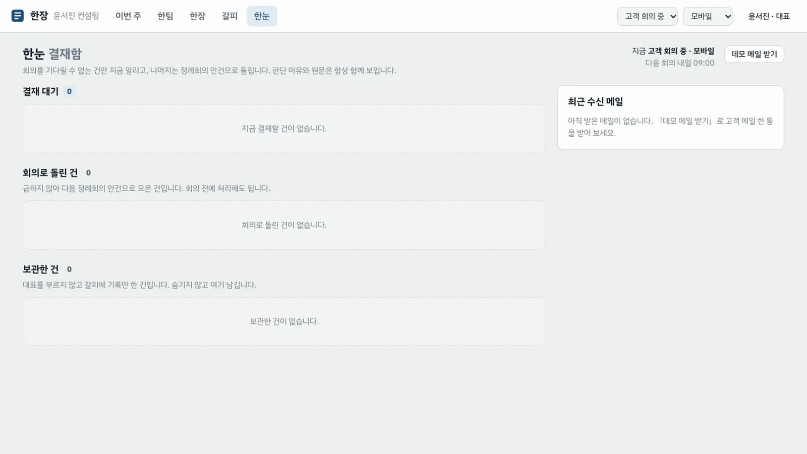
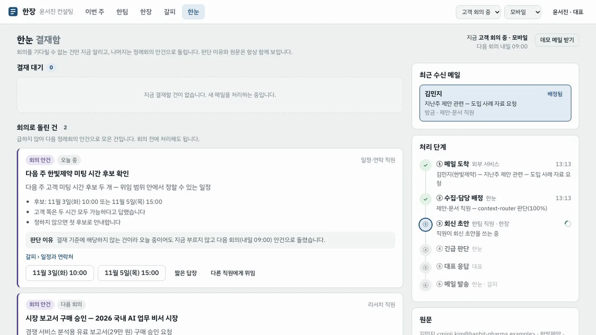
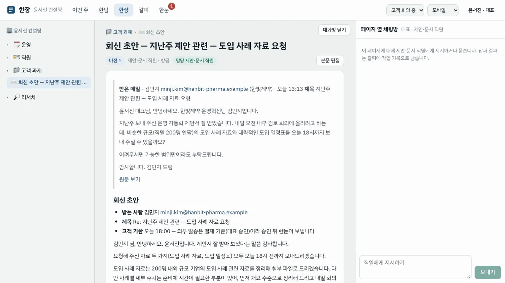
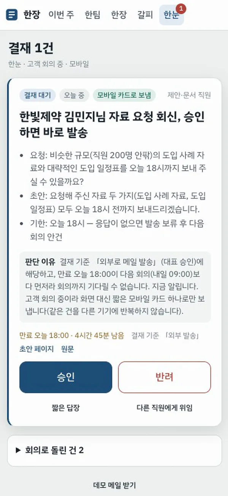
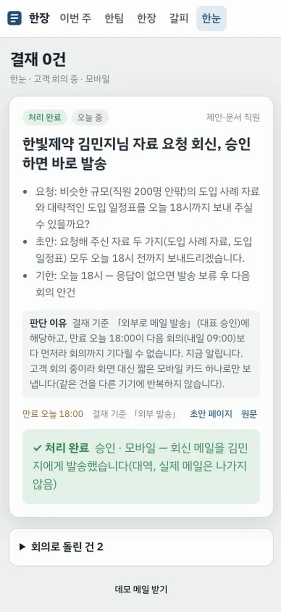
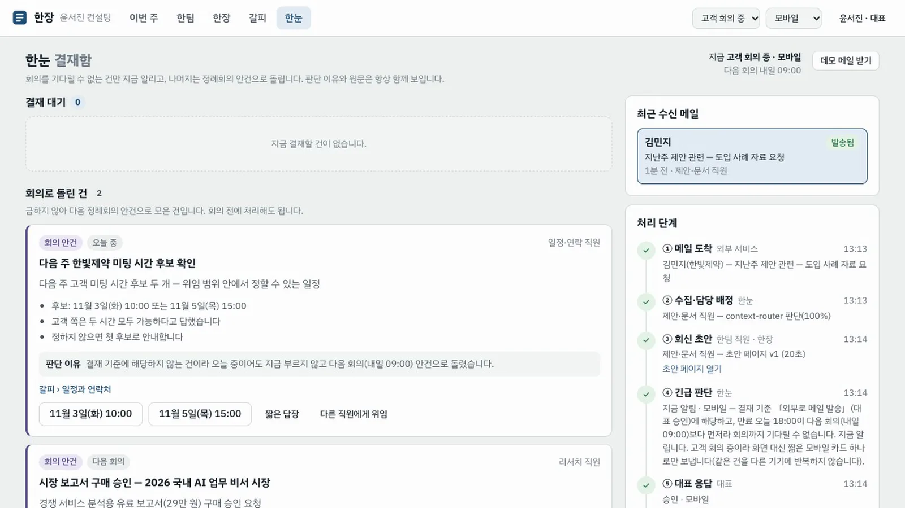
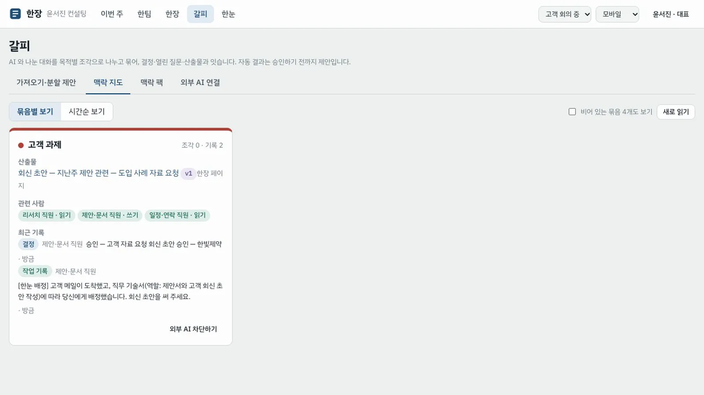

고객 회의 중에 도착한 메일 한 통을 따라갑니다. 직원이 회신 초안을 쓰고 승인을 요청하면, 한눈이 지금 알릴지 판단해 휴대폰 카드 한 장으로 보내고, 대표의 승인이 직원에게 돌아갑니다.
무엇을 · 왜#
에이전트가 늘수록 사람에게 오는 진행 보고와 승인 요청도 늘어납니다. 모두 바로 알리면 알림을 꺼 버리게 되고, 그러면 맡긴 일이 멈춥니다. 한눈은 대부분을 주간 회의 안건으로 돌리고, 회의를 기다릴 수 없는 것만 대표에게 보냅니다. 같은 건은 지금 쓰는 기기 하나로만 보냅니다.
| 한눈이 보는 것 | 예 |
|---|---|
| 직무 기술서의 결재 기준 | 외부로 메일 발송은 대표 승인 |
| 만료 시점 | 오늘 18:00 — 다음 회의(월요일 09:00)보다 먼저 |
| 대표의 지금 상태 | 고객 회의 중 · 모바일 |
| 결정 | 지금 알림 / 회의 안건으로 / 보관 — 이유는 항상 보임 |
요청은 발신 규격으로 들어옵니다. 보낸 주체, 긴급도, 응답 유형, 만료와 만료 시 처리, 한 줄 요약, 원문과 근거 맥락, 해당 결재 기준이 담깁니다. 직원과 외부 에이전트는 MCP 도구 hannun_request 로, 서비스는 POST /hannun/requests 로 보냅니다. 대표 앞 결재 행과 알림은 Process GPT 작업 목록(todolist)과 알림을 그대로 씁니다.
따라 하기#
- 상태 정하기. 위 막대에서 상태를 고객 회의 중, 기기를 모바일로 고르고 한눈을 엽니다. 머리에 「지금 고객 회의 중 · 모바일」과 다음 회의 시각이 보입니다.

- 메일 받기. 데모 메일 받기를 누릅니다(1단계는 메일 연동 대신 데모 메일). 한빛제약 김민지 님이 오늘 18시까지 자료를 보내 달라는 메일입니다. 오른쪽 처리 단계에 ① 메일 도착, ② 수집·담당 배정이 표시됩니다. 배정은 Process GPT context-router 가 직무 기술서를 보고 제안·문서 직원을 고릅니다. 같은 시각 들어온 다른 요청 둘(미팅 시간 후보 확인, 유료 보고서 구매)은 회의로 돌린 건에 판단 이유와 함께 들어갑니다.

- 결재 카드 확인. 15초쯤 지나면 결재 대기 1에 「고객 자료 요청 회신 초안 승인 — 한빛제약」 카드가 뜹니다. 모바일 카드로 보냄 표시와 판단 이유가 보입니다. 이유는 외부 발송이 결재 기준이고, 만료(오늘 18:00)가 다음 회의보다 먼저이며, 고객 회의 중이라 모바일 카드 하나로만 보낸다는 것입니다. 상단 한눈 배지는 1입니다.

- 초안 확인. 카드의 초안 페이지를 누르면 제안·문서 직원이 쓴 「회신 초안 — …」 한장 페이지(버전 1)가 열립니다. 원문 인용과 회신 초안이 들어 있습니다.

- 휴대폰에서 승인. 휴대폰(폭 390px)으로 같은 계정에 들어가 한눈을 엽니다. 결재 1건 아래 큰 카드에 한 줄 요지와 판단 이유, 승인·반려 버튼이 있습니다. 승인을 누르면 ✓ 처리 완료와 함께 회신 메일을 보냈다고 표시됩니다(대역, 실제 메일은 나가지 않음).


- 데스크톱에서 결과 확인. 결재함의 처리 단계에 ⑤ 승인 · 모바일, ⑥ 메일 발송이 표시되고 메일은 발송됨입니다. 대표가 직접 한 일은 승인 한 번입니다.

- 회의와 기억에 남은 것. 홈의 이번 주 회의에는 한눈이 돌린 요청이 안건으로 올라가 있습니다. 갈피 › 맥락 지도의 「고객 과제」 묶음에는 승인 결정과 회신 초안의 계보가 기록됩니다.

만료되면
만료까지 응답이 없으면 만료 시 처리를 따릅니다. 이 요청은 「응답이 없으면 발송 보류 후 다음 회의 안건으로」였습니다. 그러면 회신은 보내지 않고, 결재 행은 닫히고, 다음 회의에 「[만료·발송 보류]」 안건이 생깁니다. 대표가 「이동 중」일 때 온 결재는 보류했다가 이동이 끝나면 알립니다.
PoC 의 한계
메일 수신·발송은 대역입니다. AI 글라스·워치 전달, 대표가 판단을 뒤집을 때 기준을 고치는 학습은 2단계입니다.
확인 문제#
- 같은 시각에 온 「유료 보고서 구매」 요청은 왜 지금 알리지 않았나요?
- 리서치 직원이 외부 메일 발송 승인을 요청하면 어떻게 되나요?
- 결재 대기 카드는 Process GPT 의 어디에 남나요?
정답
- 결재 기준(대표 승인)이긴 하지만 만료가 없고 긴급도가 「다음 회의」라, 회의에서 처리해도 늦지 않기 때문입니다. 숨기지 않고 회의 안건으로 돌립니다.
- 리서치 직원의 직무 기술서에서 외부 발송은 불가라, 요청은 거절되어 기록만 남고 대표에게 알림이 가지 않습니다.
- 대표 앞 Process GPT 작업 목록(todolist) 행과 그 알림입니다. 승인하면 그 행이
DONE으로 닫힙니다.